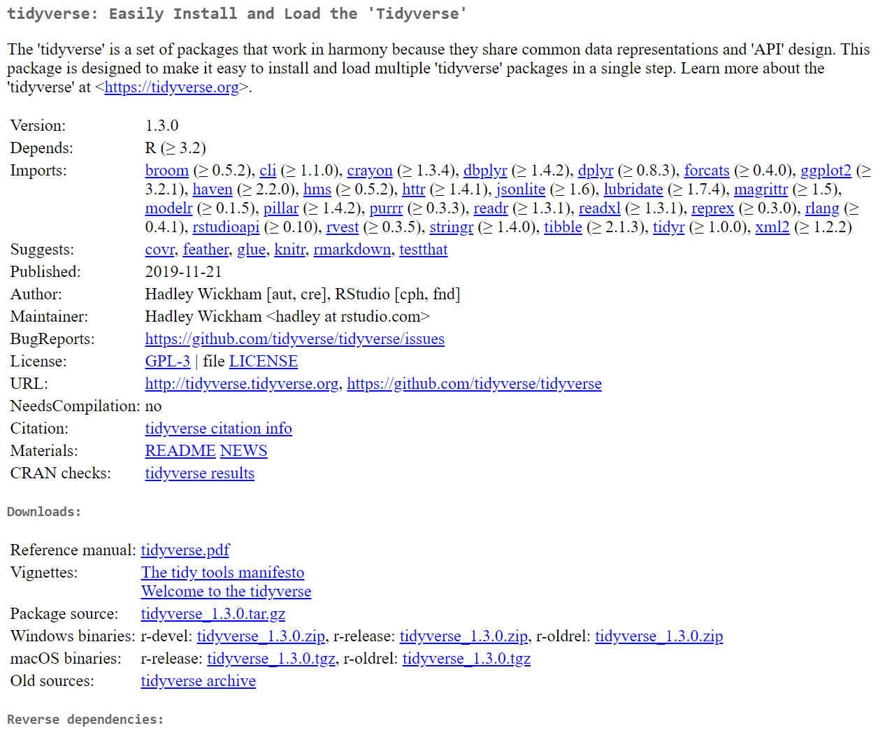

2 Enter The Tidyverse: Verbs
2.1 Introduction
In this week’s session, we will discuss R’s add-on mechanic, where we can include packages within our projects and focus on a specific family of packages called the tidyverse
2.2 Packages
A lot of computer programs have add-ons that do not come included in the main piece of software. A big (money-making) example of this is downloadable content is video games, whether it’s a an aesthetic DLC such as a hat in Among Us or new level packs in Call of Duty. But this concept is true for TV bundles, Sky can be subscribed on it’s own or with Sky Movies or Sky Sports. You could even think of downloading Apps on your phone as additional content since they don’t come with your phone’s OS by default. Or even the video games themselves are additional content for your console. This kind of approach to media is called modular.
Modular design has become very popular and is a key aspect of many Open Source pieces of software. Open Source means users can edit the underlying program and it isn’t locked in to the official developers. For beginners, it would be highly discouraged to actually do this. But there are R whizzes out there who do this kind of thing.
The product of what they do are called packages. Packages are bundles of code that R will load up ready to for you, the user, to use. These mostly consist of new functions and occasionally data, and usually include documentation on how to use the functions and data.
The tidyverse is a little different as it’s a meta-package, which means it’s actually made up of a few other packages. When we install or load it, it’s actually installing & loading a few other packages, which is why it can take a while to install.
2.2.1 Installing packages
To get a new package, we can use the install.packages() function and supply the name of the package we want as a string:
Packages are generally stored in an online repository called CRAN. When you run install.packages(), R will search CRAN for the package you’re trying to install and if it finds it, it’ll download and install it for you. It’s that easy. There are other ways to install packages, but this is the most common and basic.
However, just because we’ve installed it, doesn’t mean we can use it yet. To load it up ready to go, we need to use the library() function. This time, we don’t need the quotes as R will find the package as it is:
It also gives us a little bit of information about what’s actually happened here. The tidyverse has loaded up all these other packages, e.g. ggplot2, purrr and dplyr.
The Conflicts section just means that dplyr has a function called filter(), but so does the stats package. The stats package is loaded when you open R and includes functions like mean() and sd(). Since we loaded dplyr last (as part of tidyverse) if we try to call these functions which have the same names, R will use the ones found in dplyr, rather than those found in stats. The filter() and lag() functions in the stats package don’t get used much, so it’s fine to do this and filter() in dplyr is incredibly useful.
This dplyr package is where most of the functions we’re going to discuss today come from. As well as these packages that have been loaded by tidyverse, there were also some others that were installed, but we don’t need them right now and they can stay in the background.
2.2.2 CRAN
CRAN stands for Comprehensive R Archive Network. When you installed R in the first place, you would have also installed it from CRAN. When a developer wants to publish a package, CRAN is the main place where they go (although there are others, such as BioConductor or github). The reason being is that it’s hosted by The R Team and the install.packages() comes built in to R. You don’t need anything else to get packages from CRAN.

This is an example of what a CRAN page for a package looks like; this is the CRAN page for tidyverse and is a standard layout for CRAN pages. Yes, it looks pretty boring. You can find this page here
Most of this screenshot won’t actually be very useful to you as R newbies, but there are some key parts.
- Name - Every package has a Name, here it’s
tidyverse - Title - Usually a few words to describe what the package does and is shown after the name on CRAN, here it’s “Easily Install and Load the ‘Tidyverse’”
- Description - A paragraph to describe in more detail what the package does, and can include links, etc…
- Version - R package are version controlled and so newer version may not be back compatible. This shouldn’t be a problem for you at this point
- Depends - What other packages does this package require. For example,
tidyverserequires thebroompackage to be installed, and includes which version it needs. Theinstall.packages()function also installs all these dependencies so you don’t need to worry about them. - Author & Maintainer - The person that wrote and/or manages the package. If you wish to reference a package in your work, you can use this information
- Citation - CRAN also provides a Citation reference which is compatible with most referencing software
- Reference Manual & Vignette - Useful Documentation
There are of course more things on this page, but most of it isn’t particularly useful. The main pieces I wanted to show you are the Reference Manual and the Vignettes
2.2.2.1 Reference Manual
Previously, we used the ? operator to bring up help files. R packages also include these help files for the functions that they provide and these are all compiled into a single pdf, which is the Reference Manual.
If you want a formal run through of what every function in a package does, this is where you will find it. However, it can be a bit dull and is most useful as a reference (thus the name)
2.2.2.2 Vignettes
Vignettes are much more useful for users. They provide a walk-through or guide on how to use this package and will usually include examples of using the package in action. If you’re interested in using a new package that you’ve never used before, this is the place to start.
The tidyverse vignettes are more about the structure of the tidyverse, however if we were to look at another, say for dplyr, it walks us through like a tutorial on the best practices with this package. A lot of what’s discussed in this vignette will be covered today.
2.3 The Pipe
One of the most important things to come with the tidyverse is the %>% pipe operator. The pipe allows us to create simple and smooth workflows. It basically takes whatever is on the left of the operator and passes it to a function on the right. Here are a few pieces of code, using the magrittr package to demonstrate what I mean
##
## Attaching package: 'magrittr'## The following object is masked from 'package:purrr':
##
## set_names## The following object is masked from 'package:tidyr':
##
## extractThe following three lines of code are equivalent.
## [1] 5## [1] 5## [1] 5In this toy example, the first version is the simplest, but that’s because we have an operator to do addition. If we didn’t have this operator (say we were using the mean() function instead), then we’d need to do the second version with the add() function. The third shows the same line of code with the pipe.
Here we have given the value on the left, 2 as the first argument of add(), and then also supplied the second argument.
Here is a much more complicated example:
## [1] 6When trying to calculate this, we’re working from the inside brackets outwards. We first need to figure out which bracket gets evaluated first and work from there. R can do this easily, but it can be tricky for a reader or someone writing this out to not get confused.
## [1] 6This problem of figuring out where to start is made even harder when we’re dealing with functions, rather than operations. Most of the processes we perform in R use functions and so this kind of line is what we’d most often be dealing with. It’s really confusing.
We could simplify it a bit by doing each line of code on a new line and replacing the variable with a new value:
## [1] 6However, this involves a lot of repetition. If we have to type the same thing out over and over again, we’re very likely to type something wrong. In fact, when writing that example out, I typed it wrong and produced this, can you spot the error:
## [1] 5.4So rather than repeatedly re-assigning a variable, we can simply pipe the output from one function into the next function. These are known as pipelines and it demonstrates a clear order of what functions you’re doing.
## [1] 6It isn’t necessary to move onto a new line for each function, the following works just as well:
## [1] 6and while this is more concise, if you are doing many functions, this, again can look messy. Getting into the habit of creating a new line for each function will improve readability when you’re coming back to look at your code in the future.
Remember that when using the pipe, the following operations are equivalent
f(a,b,c)
a %>% f(b,c)Functions from the tidyverse and a lot of other packages which follow the tidyverse style (or philosopy as described in the tidyverse vignette/manifesto) will generally take your data set as their first argument and will return another, updated data set. This allows you to make a really smooth chain of functions.
2.4 Tibbles
In the previous lesson, we loaded up a dataset called iris. By default, data sets are loaded as a structure called a data.frame. The tidyverse team have built on this by creating a new structure nicknamed a tibble (officially they’re called tbl_df, short for table data frame), which works mostly the same, but it prints its data much neater and is a little more consistent in how we interact with it. Here’s an example from the tidyverse
## # A tibble: 87 x 14
## name height mass hair_color skin_color eye_color birth_year sex gender
## <chr> <int> <dbl> <chr> <chr> <chr> <dbl> <chr> <chr>
## 1 Luke~ 172 77 blond fair blue 19 male mascu~
## 2 C-3PO 167 75 <NA> gold yellow 112 none mascu~
## 3 R2-D2 96 32 <NA> white, bl~ red 33 none mascu~
## 4 Dart~ 202 136 none white yellow 41.9 male mascu~
## 5 Leia~ 150 49 brown light brown 19 fema~ femin~
## 6 Owen~ 178 120 brown, gr~ light blue 52 male mascu~
## 7 Beru~ 165 75 brown light blue 47 fema~ femin~
## 8 R5-D4 97 32 <NA> white, red red NA none mascu~
## 9 Bigg~ 183 84 black light brown 24 male mascu~
## 10 Obi-~ 182 77 auburn, w~ fair blue-gray 57 male mascu~
## # ... with 77 more rows, and 5 more variables: homeworld <chr>, species <chr>,
## # films <list>, vehicles <list>, starships <list>Notice how, when printing, we are only shown the first 10 rows and first few columns. It also gives us an indication of how many other rows there are and what other columns are present. If we were to print out a native data.frame from base R, we would have been shown everything and it would clog up our Console. If you’re brave, then run as.data.frame(starwars) and it will convert this tibble into a dataframe and show just how messy it can be.
The way that the data is organised above is the most common way of arranging our data. Each row is known as an observation and will usually be a single participant. Each column is a variable associated with that observation. Notice in the above, the third observation has a name variable of "R2-D2"and a mass variable of 32.0. Because each variable should be consistent, they are stored as vectors. As we recall, vectors must all be the same type. For every participant in this dataset, height is an integer indicated by the <int> under the variable name, meaning a whole number and eye_color is a character indicated by <chr>.
We can also see the names of the variables in our dataset by using the names() function, or get the dimensions by using nrow(), ncol() or dim():
## [1] "name" "height" "mass" "hair_color" "skin_color"
## [6] "eye_color" "birth_year" "sex" "gender" "homeworld"
## [11] "species" "films" "vehicles" "starships"## [1] 87## [1] 14## [1] 87 14There are a few other advantages of tibbles over data.frames that are a lot more technical, so feel free to read about them yourself by loading the help file using ?tbl_df
2.5 One Table Verbs
In the tidyverse functions that do things to your data are known as verbs. Which makes sense since verbs are “doing words” and we are doing something to our data. Today, we’re going to have a look at some of the verbs which act on a single dataset. There are a few that can act on two tables (allowing them to be combined into one table), but for now, we’ll stick with one.
2.5.1 filter()
The filter function allows us to pick out specific observations from our dataset depending on other values in our dataset.
## # A tibble: 11 x 14
## name height mass hair_color skin_color eye_color birth_year sex gender
## <chr> <int> <dbl> <chr> <chr> <chr> <dbl> <chr> <chr>
## 1 R2-D2 96 32 <NA> white, bl~ red 33 none mascu~
## 2 Palp~ 170 75 grey pale yellow 82 male mascu~
## 3 Jar ~ 196 66 none orange orange 52 male mascu~
## 4 Roos~ 224 82 none grey orange NA male mascu~
## 5 Rugo~ 206 NA none green orange NA male mascu~
## 6 Ric ~ 183 NA brown fair blue NA <NA> <NA>
## 7 Quar~ 183 NA black dark brown 62 <NA> <NA>
## 8 Greg~ 185 85 black dark brown NA male mascu~
## 9 Cordé 157 NA brown light brown NA fema~ femin~
## 10 Dormé 165 NA brown light brown NA fema~ femin~
## 11 Padm~ 165 45 brown light brown 46 fema~ femin~
## # ... with 5 more variables: homeworld <chr>, species <chr>, films <list>,
## # vehicles <list>, starships <list>This has pulled out just the participants in the dataset that are from the planet "Naboo". Can you see how this has worked? It has created a logical vector, homeworld == "Naboo" from the data within the tibble. We could do this without using filter() by just using the functions available without the tidyverse stuff, but it’s messier:
## # A tibble: 11 x 14
## name height mass hair_color skin_color eye_color birth_year sex gender
## <chr> <int> <dbl> <chr> <chr> <chr> <dbl> <chr> <chr>
## 1 R2-D2 96 32 <NA> white, bl~ red 33 none mascu~
## 2 Palp~ 170 75 grey pale yellow 82 male mascu~
## 3 Jar ~ 196 66 none orange orange 52 male mascu~
## 4 Roos~ 224 82 none grey orange NA male mascu~
## 5 Rugo~ 206 NA none green orange NA male mascu~
## 6 Ric ~ 183 NA brown fair blue NA <NA> <NA>
## 7 Quar~ 183 NA black dark brown 62 <NA> <NA>
## 8 Greg~ 185 85 black dark brown NA male mascu~
## 9 Cordé 157 NA brown light brown NA fema~ femin~
## 10 Dormé 165 NA brown light brown NA fema~ femin~
## 11 Padm~ 165 45 brown light brown 46 fema~ femin~
## # ... with 5 more variables: homeworld <chr>, species <chr>, films <list>,
## # vehicles <list>, starships <list>So firstly, we have to specify that homeworld is a variable in the starwars dataset, which we don’t have to when using filter(). And perhaps more confusingly, we have to use this !is.na(starwars$homeworld) bit. The function, is.na() will check if values are missing, which are usually shown as NA and are slightly greyed out, e.g. R2-D2’s hair colour is NA because they don’t have any! filter() deals with this check and will ignore NA values, but the default R method does not and so we have to specify this.
We can combine multiple criteria to hone in on which parts of our data we want to look at:
## # A tibble: 9 x 14
## name height mass hair_color skin_color eye_color birth_year sex gender
## <chr> <int> <dbl> <chr> <chr> <chr> <dbl> <chr> <chr>
## 1 Leia~ 150 49 brown light brown 19 fema~ femin~
## 2 Beru~ 165 75 brown light blue 47 fema~ femin~
## 3 Mon ~ 150 NA auburn fair blue 48 fema~ femin~
## 4 Shmi~ 163 NA black fair brown 72 fema~ femin~
## 5 Cordé 157 NA brown light brown NA fema~ femin~
## 6 Dormé 165 NA brown light brown NA fema~ femin~
## 7 Joca~ 167 NA white fair blue NA fema~ femin~
## 8 Rey NA NA brown light hazel NA fema~ femin~
## 9 Padm~ 165 45 brown light brown 46 fema~ femin~
## # ... with 5 more variables: homeworld <chr>, species <chr>, films <list>,
## # vehicles <list>, starships <list>This is the same as using the & operator between each of these criteria, therefore, this returns all observations where all of the criteria are TRUE and we can use as many as we want. If we want to get observations where any of some criteria are true, we can use the | operator:
## # A tibble: 41 x 14
## name height mass hair_color skin_color eye_color birth_year sex gender
## <chr> <int> <dbl> <chr> <chr> <chr> <dbl> <chr> <chr>
## 1 Luke~ 172 77 blond fair blue 19 male mascu~
## 2 R2-D2 96 32 <NA> white, bl~ red 33 none mascu~
## 3 Dart~ 202 136 none white yellow 41.9 male mascu~
## 4 Leia~ 150 49 brown light brown 19 fema~ femin~
## 5 Owen~ 178 120 brown, gr~ light blue 52 male mascu~
## 6 Beru~ 165 75 brown light blue 47 fema~ femin~
## 7 Bigg~ 183 84 black light brown 24 male mascu~
## 8 Obi-~ 182 77 auburn, w~ fair blue-gray 57 male mascu~
## 9 Anak~ 188 84 blond fair blue 41.9 male mascu~
## 10 Wilh~ 180 NA auburn, g~ fair blue 64 male mascu~
## # ... with 31 more rows, and 5 more variables: homeworld <chr>, species <chr>,
## # films <list>, vehicles <list>, starships <list>We can even use that is.na() function here to look for missing data, which can allow us to investigate holes in our data sets:
## # A tibble: 44 x 14
## name height mass hair_color skin_color eye_color birth_year sex gender
## <chr> <int> <dbl> <chr> <chr> <chr> <dbl> <chr> <chr>
## 1 R5-D4 97 32 <NA> white, red red NA none mascu~
## 2 Jek ~ 180 110 brown fair blue NA male mascu~
## 3 Arve~ NA NA brown fair brown NA male mascu~
## 4 Nien~ 160 68 none grey black NA male mascu~
## 5 Nute~ 191 90 none mottled g~ red NA male mascu~
## 6 Roos~ 224 82 none grey orange NA male mascu~
## 7 Rugo~ 206 NA none green orange NA male mascu~
## 8 Ric ~ 183 NA brown fair blue NA <NA> <NA>
## 9 Watto 137 NA black blue, grey yellow NA male mascu~
## 10 Sebu~ 112 40 none grey, red orange NA male mascu~
## # ... with 34 more rows, and 5 more variables: homeworld <chr>, species <chr>,
## # films <list>, vehicles <list>, starships <list>2.5.2 slice()
The slice function is a little bit cruder than the filter() function, in that it wants numbers to pull out certain observations. So we can’t make it depend on criteria from our data, but it can be useful to preview certain subsections of it.
## # A tibble: 10 x 14
## name height mass hair_color skin_color eye_color birth_year sex gender
## <chr> <int> <dbl> <chr> <chr> <chr> <dbl> <chr> <chr>
## 1 Eeth~ 171 NA black brown brown NA male mascu~
## 2 Adi ~ 184 50 none dark blue NA fema~ femin~
## 3 Saes~ 188 NA none pale orange NA male mascu~
## 4 Yara~ 264 NA none white yellow NA male mascu~
## 5 Plo ~ 188 80 none orange black 22 male mascu~
## 6 Mas ~ 196 NA none blue blue NA male mascu~
## 7 Greg~ 185 85 black dark brown NA male mascu~
## 8 Cordé 157 NA brown light brown NA fema~ femin~
## 9 Clie~ 183 NA brown fair blue 82 male mascu~
## 10 Pogg~ 183 80 none green yellow NA male mascu~
## # ... with 5 more variables: homeworld <chr>, species <chr>, films <list>,
## # vehicles <list>, starships <list>Similar to how we subsetted vectors and data.frames previously, we can also say which rows we don’t want, so if I don’t want the first 10 rows, I can use -(1:10)
## # A tibble: 77 x 14
## name height mass hair_color skin_color eye_color birth_year sex gender
## <chr> <int> <dbl> <chr> <chr> <chr> <dbl> <chr> <chr>
## 1 Anak~ 188 84 blond fair blue 41.9 male mascu~
## 2 Wilh~ 180 NA auburn, g~ fair blue 64 male mascu~
## 3 Chew~ 228 112 brown unknown blue 200 male mascu~
## 4 Han ~ 180 80 brown fair brown 29 male mascu~
## 5 Gree~ 173 74 <NA> green black 44 male mascu~
## 6 Jabb~ 175 1358 <NA> green-tan~ orange 600 herm~ mascu~
## 7 Wedg~ 170 77 brown fair hazel 21 male mascu~
## 8 Jek ~ 180 110 brown fair blue NA male mascu~
## 9 Yoda 66 17 white green brown 896 male mascu~
## 10 Palp~ 170 75 grey pale yellow 82 male mascu~
## # ... with 67 more rows, and 5 more variables: homeworld <chr>, species <chr>,
## # films <list>, vehicles <list>, starships <list>It also has a few sibling functions which can come in handy for investigating our data. The first allows us to pull out a random set of observations:
## # A tibble: 10 x 14
## name height mass hair_color skin_color eye_color birth_year sex gender
## <chr> <int> <dbl> <chr> <chr> <chr> <dbl> <chr> <chr>
## 1 Palp~ 170 75 grey pale yellow 82 male mascu~
## 2 Chew~ 228 112 brown unknown blue 200 male mascu~
## 3 Bail~ 191 NA black tan brown 67 male mascu~
## 4 Owen~ 178 120 brown, gr~ light blue 52 male mascu~
## 5 Grie~ 216 159 none brown, wh~ green, y~ NA male mascu~
## 6 Dart~ 202 136 none white yellow 41.9 male mascu~
## 7 Rugo~ 206 NA none green orange NA male mascu~
## 8 Luke~ 172 77 blond fair blue 19 male mascu~
## 9 Jek ~ 180 110 brown fair blue NA male mascu~
## 10 Nute~ 191 90 none mottled g~ red NA male mascu~
## # ... with 5 more variables: homeworld <chr>, species <chr>, films <list>,
## # vehicles <list>, starships <list>There are also slice_min() or slice_max() which are used to pull out the rows with the highest or lowest values of a variable
## # A tibble: 3 x 14
## name height mass hair_color skin_color eye_color birth_year sex gender
## <chr> <int> <dbl> <chr> <chr> <chr> <dbl> <chr> <chr>
## 1 Jabb~ 175 1358 <NA> green-tan~ orange 600 herm~ mascu~
## 2 Grie~ 216 159 none brown, wh~ green, y~ NA male mascu~
## 3 IG-88 200 140 none metal red 15 none mascu~
## # ... with 5 more variables: homeworld <chr>, species <chr>, films <list>,
## # vehicles <list>, starships <list>2.5.3 arrange()
Sometimes we may wish to re-arrange our data into a neater ordering. The arrange() function does just that. It’ll sort your data by whatever variable(s) are passed to it:
## # A tibble: 87 x 14
## name height mass hair_color skin_color eye_color birth_year sex gender
## <chr> <int> <dbl> <chr> <chr> <chr> <dbl> <chr> <chr>
## 1 Ackb~ 180 83 none brown mot~ orange 41 male mascu~
## 2 Adi ~ 184 50 none dark blue NA fema~ femin~
## 3 Anak~ 188 84 blond fair blue 41.9 male mascu~
## 4 Arve~ NA NA brown fair brown NA male mascu~
## 5 Ayla~ 178 55 none blue hazel 48 fema~ femin~
## 6 Bail~ 191 NA black tan brown 67 male mascu~
## 7 Barr~ 166 50 black yellow blue 40 fema~ femin~
## 8 BB8 NA NA none none black NA none mascu~
## 9 Ben ~ 163 65 none grey, gre~ orange NA male mascu~
## 10 Beru~ 165 75 brown light blue 47 fema~ femin~
## # ... with 77 more rows, and 5 more variables: homeworld <chr>, species <chr>,
## # films <list>, vehicles <list>, starships <list>And if we have ties, such as with mass, we can add a second sorting variable.
## # A tibble: 87 x 14
## name height mass hair_color skin_color eye_color birth_year sex gender
## <chr> <int> <dbl> <chr> <chr> <chr> <dbl> <chr> <chr>
## 1 Ratt~ 79 15 none grey, blue unknown NA male mascu~
## 2 Yoda 66 17 white green brown 896 male mascu~
## 3 Wick~ 88 20 brown brown brown 8 male mascu~
## 4 R2-D2 96 32 <NA> white, bl~ red 33 none mascu~
## 5 R5-D4 97 32 <NA> white, red red NA none mascu~
## 6 Sebu~ 112 40 none grey, red orange NA male mascu~
## 7 Dud ~ 94 45 none blue, grey yellow NA male mascu~
## 8 Padm~ 165 45 brown light brown 46 fema~ femin~
## 9 Sly ~ 178 48 none pale white NA <NA> <NA>
## 10 Wat ~ 193 48 none green, gr~ unknown NA male mascu~
## # ... with 77 more rows, and 5 more variables: homeworld <chr>, species <chr>,
## # films <list>, vehicles <list>, starships <list>Notice this is sorted by mass first and then height.
When using arrange(), NA values will always be put to the bottom of our tibble, which we can see by using the tail() function, which gives the bottom 6 rows of a tibble. Here the mass & height are all NA.
## # A tibble: 6 x 14
## name height mass hair_color skin_color eye_color birth_year sex gender
## <chr> <int> <dbl> <chr> <chr> <chr> <dbl> <chr> <chr>
## 1 Arve~ NA NA brown fair brown NA male mascu~
## 2 Finn NA NA black dark dark NA male mascu~
## 3 Rey NA NA brown light hazel NA fema~ femin~
## 4 Poe ~ NA NA brown light brown NA male mascu~
## 5 BB8 NA NA none none black NA none mascu~
## 6 Capt~ NA NA unknown unknown unknown NA <NA> <NA>
## # ... with 5 more variables: homeworld <chr>, species <chr>, films <list>,
## # vehicles <list>, starships <list>By default, R will sort numeric data in ascending order and characters in alphabetical order. If we want to reverse this, we can use the desc() function:
## # A tibble: 87 x 14
## name height mass hair_color skin_color eye_color birth_year sex gender
## <chr> <int> <dbl> <chr> <chr> <chr> <dbl> <chr> <chr>
## 1 Jabb~ 175 1358 <NA> green-tan~ orange 600 herm~ mascu~
## 2 Grie~ 216 159 none brown, wh~ green, y~ NA male mascu~
## 3 IG-88 200 140 none metal red 15 none mascu~
## 4 Dart~ 202 136 none white yellow 41.9 male mascu~
## 5 Tarf~ 234 136 brown brown blue NA male mascu~
## 6 Owen~ 178 120 brown, gr~ light blue 52 male mascu~
## 7 Bossk 190 113 none green red 53 male mascu~
## 8 Chew~ 228 112 brown unknown blue 200 male mascu~
## 9 Jek ~ 180 110 brown fair blue NA male mascu~
## 10 Dext~ 198 102 none brown yellow NA male mascu~
## # ... with 77 more rows, and 5 more variables: homeworld <chr>, species <chr>,
## # films <list>, vehicles <list>, starships <list>Once again, the NA values are at the bottom.
2.5.4 select()
The previous verbs all did something related to the rows in our data, whether that was extracting some subset of rows, or to organise the rows of our data better. select() acts similar to filter() but to extract columns or variables, rather than rows (observations)
## # A tibble: 87 x 3
## name height mass
## <chr> <int> <dbl>
## 1 Luke Skywalker 172 77
## 2 C-3PO 167 75
## 3 R2-D2 96 32
## 4 Darth Vader 202 136
## 5 Leia Organa 150 49
## 6 Owen Lars 178 120
## 7 Beru Whitesun lars 165 75
## 8 R5-D4 97 32
## 9 Biggs Darklighter 183 84
## 10 Obi-Wan Kenobi 182 77
## # ... with 77 more rowsFor this, we have selected only three variables. There are a few different ways we can use select(), depending on what we want to do.
Again, we can say what we don’t want:
## # A tibble: 87 x 12
## name height mass hair_color birth_year sex gender homeworld species films
## <chr> <int> <dbl> <chr> <dbl> <chr> <chr> <chr> <chr> <lis>
## 1 Luke~ 172 77 blond 19 male mascu~ Tatooine Human <chr~
## 2 C-3PO 167 75 <NA> 112 none mascu~ Tatooine Droid <chr~
## 3 R2-D2 96 32 <NA> 33 none mascu~ Naboo Droid <chr~
## 4 Dart~ 202 136 none 41.9 male mascu~ Tatooine Human <chr~
## 5 Leia~ 150 49 brown 19 fema~ femin~ Alderaan Human <chr~
## 6 Owen~ 178 120 brown, gr~ 52 male mascu~ Tatooine Human <chr~
## 7 Beru~ 165 75 brown 47 fema~ femin~ Tatooine Human <chr~
## 8 R5-D4 97 32 <NA> NA none mascu~ Tatooine Droid <chr~
## 9 Bigg~ 183 84 black 24 male mascu~ Tatooine Human <chr~
## 10 Obi-~ 182 77 auburn, w~ 57 male mascu~ Stewjon Human <chr~
## # ... with 77 more rows, and 2 more variables: vehicles <list>,
## # starships <list>We can use numbers, similar to slice() to get the nth columns
## # A tibble: 87 x 6
## name hair_color skin_color birth_year sex gender
## <chr> <chr> <chr> <dbl> <chr> <chr>
## 1 Luke Skywalker blond fair 19 male masculine
## 2 C-3PO <NA> gold 112 none masculine
## 3 R2-D2 <NA> white, blue 33 none masculine
## 4 Darth Vader none white 41.9 male masculine
## 5 Leia Organa brown light 19 female feminine
## 6 Owen Lars brown, grey light 52 male masculine
## 7 Beru Whitesun lars brown light 47 female feminine
## 8 R5-D4 <NA> white, red NA none masculine
## 9 Biggs Darklighter black light 24 male masculine
## 10 Obi-Wan Kenobi auburn, white fair 57 male masculine
## # ... with 77 more rowsPersonally, I don’t tend to use the numeric version, as I prefer to use the names of the variables I’m getting. Above, I used 7:9 to create a vector 7 8 9 and pull them. We can actully do this using the variable names (but this doesn’t work outside of tidyverse)
## # A tibble: 87 x 6
## name height mass hair_color skin_color eye_color
## <chr> <int> <dbl> <chr> <chr> <chr>
## 1 Luke Skywalker 172 77 blond fair blue
## 2 C-3PO 167 75 <NA> gold yellow
## 3 R2-D2 96 32 <NA> white, blue red
## 4 Darth Vader 202 136 none white yellow
## 5 Leia Organa 150 49 brown light brown
## 6 Owen Lars 178 120 brown, grey light blue
## 7 Beru Whitesun lars 165 75 brown light blue
## 8 R5-D4 97 32 <NA> white, red red
## 9 Biggs Darklighter 183 84 black light brown
## 10 Obi-Wan Kenobi 182 77 auburn, white fair blue-gray
## # ... with 77 more rowsOne final thing we can use select() for is to rearrange our variables. The variables in select() will be in the order supplied:
## # A tibble: 87 x 3
## height mass name
## <int> <dbl> <chr>
## 1 172 77 Luke Skywalker
## 2 167 75 C-3PO
## 3 96 32 R2-D2
## 4 202 136 Darth Vader
## 5 150 49 Leia Organa
## 6 178 120 Owen Lars
## 7 165 75 Beru Whitesun lars
## 8 97 32 R5-D4
## 9 183 84 Biggs Darklighter
## 10 182 77 Obi-Wan Kenobi
## # ... with 77 more rowsBut, what if we want to bring just one or two variables to the left (so we can see them easier) and not drop the rest? Well that’s where a little tidy helper called everything() comes in:
## # A tibble: 87 x 14
## homeworld species name height mass hair_color skin_color eye_color
## <chr> <chr> <chr> <int> <dbl> <chr> <chr> <chr>
## 1 Tatooine Human Luke~ 172 77 blond fair blue
## 2 Tatooine Droid C-3PO 167 75 <NA> gold yellow
## 3 Naboo Droid R2-D2 96 32 <NA> white, bl~ red
## 4 Tatooine Human Dart~ 202 136 none white yellow
## 5 Alderaan Human Leia~ 150 49 brown light brown
## 6 Tatooine Human Owen~ 178 120 brown, gr~ light blue
## 7 Tatooine Human Beru~ 165 75 brown light blue
## 8 Tatooine Droid R5-D4 97 32 <NA> white, red red
## 9 Tatooine Human Bigg~ 183 84 black light brown
## 10 Stewjon Human Obi-~ 182 77 auburn, w~ fair blue-gray
## # ... with 77 more rows, and 6 more variables: birth_year <dbl>, sex <chr>,
## # gender <chr>, films <list>, vehicles <list>, starships <list>It basically acts as a filler for all the “other” variables that haven’t been mentioned in select() yet, and will retain the order of them as they appear in the dataset.
Now that we know how to do something to our columns and our rows seperately, it makes sense to want to combine them. As discussed earlier, this is made very easy using the %>% pipe.
## # A tibble: 17 x 5
## name height mass homeworld species
## <chr> <int> <dbl> <chr> <chr>
## 1 Leia Organa 150 49 Alderaan Human
## 2 Beru Whitesun lars 165 75 Tatooine Human
## 3 Mon Mothma 150 NA Chandrila Human
## 4 Shmi Skywalker 163 NA Tatooine Human
## 5 Ayla Secura 178 55 Ryloth Twi'lek
## 6 Adi Gallia 184 50 Coruscant Tholothian
## 7 Cordé 157 NA Naboo Human
## 8 Luminara Unduli 170 56.2 Mirial Mirialan
## 9 Barriss Offee 166 50 Mirial Mirialan
## 10 Dormé 165 NA Naboo Human
## 11 Zam Wesell 168 55 Zolan Clawdite
## 12 Taun We 213 NA Kamino Kaminoan
## 13 Jocasta Nu 167 NA Coruscant Human
## 14 R4-P17 96 NA <NA> Droid
## 15 Shaak Ti 178 57 Shili Togruta
## 16 Rey NA NA <NA> Human
## 17 Padmé Amidala 165 45 Naboo Humanfilter() outputs a tibble, which can then be passed to select() with ease.
2.5.5 mutate()
The mutate function is really the powerhouse of the tidyverse and behind the %>% pipe, you will probably use it a lot. It allows us to mutate or change our data as we need. This can be to change existing variables or to create new ones. First, we will convert height from cm to m by dividing by 100
## # A tibble: 87 x 14
## name height mass hair_color skin_color eye_color birth_year sex gender
## <chr> <dbl> <dbl> <chr> <chr> <chr> <dbl> <chr> <chr>
## 1 Luke~ 1.72 77 blond fair blue 19 male mascu~
## 2 C-3PO 1.67 75 <NA> gold yellow 112 none mascu~
## 3 R2-D2 0.96 32 <NA> white, bl~ red 33 none mascu~
## 4 Dart~ 2.02 136 none white yellow 41.9 male mascu~
## 5 Leia~ 1.5 49 brown light brown 19 fema~ femin~
## 6 Owen~ 1.78 120 brown, gr~ light blue 52 male mascu~
## 7 Beru~ 1.65 75 brown light blue 47 fema~ femin~
## 8 R5-D4 0.97 32 <NA> white, red red NA none mascu~
## 9 Bigg~ 1.83 84 black light brown 24 male mascu~
## 10 Obi-~ 1.82 77 auburn, w~ fair blue-gray 57 male mascu~
## # ... with 77 more rows, and 5 more variables: homeworld <chr>, species <chr>,
## # films <list>, vehicles <list>, starships <list>We can combine multiple mutations in a single mutate() function and R will perform them in order. This also means if we change a variable in one command, the updated version will be used from then on. It’s also worth pointing out that new variables will by default be put at the end of our data, but we can use the .before or .after arguments to squeeze them in earlier (notice that there is a dot at the start of these agrgument names, it’s .before not before)
## # A tibble: 87 x 15
## name height mass BMI hair_color skin_color eye_color birth_year sex
## <chr> <dbl> <dbl> <dbl> <chr> <chr> <chr> <dbl> <chr>
## 1 Luke~ 1.72 77 26.0 blond fair blue 19 male
## 2 C-3PO 1.67 75 26.9 <NA> gold yellow 112 none
## 3 R2-D2 0.96 32 34.7 <NA> white, bl~ red 33 none
## 4 Dart~ 2.02 136 33.3 none white yellow 41.9 male
## 5 Leia~ 1.5 49 21.8 brown light brown 19 fema~
## 6 Owen~ 1.78 120 37.9 brown, gr~ light blue 52 male
## 7 Beru~ 1.65 75 27.5 brown light blue 47 fema~
## 8 R5-D4 0.97 32 34.0 <NA> white, red red NA none
## 9 Bigg~ 1.83 84 25.1 black light brown 24 male
## 10 Obi-~ 1.82 77 23.2 auburn, w~ fair blue-gray 57 male
## # ... with 77 more rows, and 6 more variables: gender <chr>, homeworld <chr>,
## # species <chr>, films <list>, vehicles <list>, starships <list>Any fundamental changes that need to be made to your data, can be done using this mutate() function, and we will explore this much more in the future.
2.5.6 summarise()
So now we can manipulate our data as a whole, but that’s no good if we can’t provide a summary of our data. As the name suggests, the summarise() function does exactly that. It performs functions on the variables as a whole and returns some sort of summary statistic (depending on what we ask for), and it returns that as another tibble
## # A tibble: 1 x 2
## mass_avg mass_sd
## <dbl> <dbl>
## 1 97.3 169.Notice that for these two functions, mean() and sd(), I need to pass an extra argument, the na.rm=T just tells R to ignore the NA values. Otherwise, the default means that both of these functions would return NA (seems a bit silly, but it can be useful for spotting errors).
2.5.7 group_by()
The final thing on today’s agenda is the group_by() function which allows us to group our data in meaningful ways. This is exceptionally useful with the summarise() function above, as it can give us summary statistics based on other variables. Firstly, what does it look like to group our data?
## # A tibble: 87 x 14
## # Groups: gender [3]
## name height mass hair_color skin_color eye_color birth_year sex gender
## <chr> <int> <dbl> <chr> <chr> <chr> <dbl> <chr> <chr>
## 1 Luke~ 172 77 blond fair blue 19 male mascu~
## 2 C-3PO 167 75 <NA> gold yellow 112 none mascu~
## 3 R2-D2 96 32 <NA> white, bl~ red 33 none mascu~
## 4 Dart~ 202 136 none white yellow 41.9 male mascu~
## 5 Leia~ 150 49 brown light brown 19 fema~ femin~
## 6 Owen~ 178 120 brown, gr~ light blue 52 male mascu~
## 7 Beru~ 165 75 brown light blue 47 fema~ femin~
## 8 R5-D4 97 32 <NA> white, red red NA none mascu~
## 9 Bigg~ 183 84 black light brown 24 male mascu~
## 10 Obi-~ 182 77 auburn, w~ fair blue-gray 57 male mascu~
## # ... with 77 more rows, and 5 more variables: homeworld <chr>, species <chr>,
## # films <list>, vehicles <list>, starships <list>The data looks mostly the same, except we now have a bit of information telling us that the data has been grouped and how many groups there are.
But it gets more interesting when we perform a summarise():
starwars %>%
group_by(gender) %>%
summarise(number = n(),
mass_avg = mean(mass, na.rm=T),
mass_sd = sd(mass, na.rm=T),
height_avg = mean(height, na.rm=T),
height_sd = sd(height, na.rm=T),
.groups="drop")## # A tibble: 3 x 6
## gender number mass_avg mass_sd height_avg height_sd
## <chr> <int> <dbl> <dbl> <dbl> <dbl>
## 1 feminine 17 54.7 8.59 165. 23.6
## 2 masculine 66 106. 185. 177. 37.6
## 3 <NA> 4 48 NA 181. 2.89This time we get a row of data for each of our groups. If we were to have more groups, we’d have more rows. I used a few other new things here. The n() function will return the size of each group, and so can be useful here when summarising our data. I also passed an argument called .groups, which just stops R from telling me that it has ungrouped my data (this is a bit of a bug and hopefully will be removed in future versions).